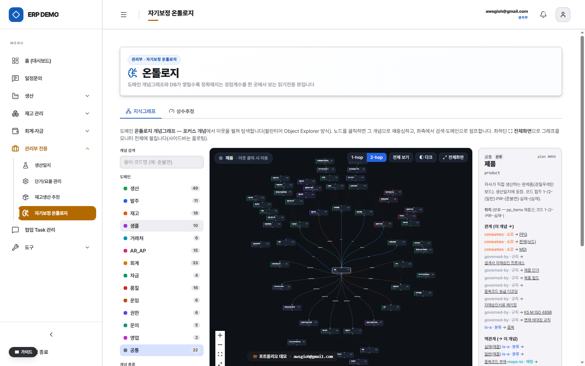

PROJECT 03 · AI LAYER
문서허브·온톨로지 — AI 레이어
무엇
받은 요청 서류를 파싱해 필요한 서류 목록을 뽑고, 사내 문서에서 근거를 찾아와, 기존 양식대로 초안까지 만들어 내는 문서 생성 파이프라인. 그 아래를 비정형 문서의 시멘틱 검색 백본과 온톨로지 개념그래프가 받칩니다.
왜
서류 작성은 "무엇이 필요한지 파악 → 근거 찾기 → 양식 채우기"가 매번 사람 손을 타는 일이었습니다. 문서는 폴더와 사람 기억에, 용어는 사람마다 다르게 흩어져 있어 찾기부터 막혔습니다.
결과
요청 서류 → 필요 서류 도출 → 근거 회수 → 양식 기반 초안 → docx 내보내기가 한 흐름으로 이어지고, 작성 케이스는 갭분석 라인업으로 영속화됩니다. 키워드+시멘틱 RRF 하이브리드 검색·정본 레지스트리·온톨로지 정합 체크가 그 토대.
요청 서류 → 초안
문서 생성 파이프라인
시멘틱 검색
RRF 하이브리드
온톨로지 의미 검색
개념그래프

1
문서허브 — 요청 서류에서 초안까지
받은 공문·요청서를 올리면 파싱해 어떤 서류가 필요한지를 항목으로 뽑아내고, 항목마다 사내 문서에서 근거를 찾아온 뒤, 기존 문서 양식을 컨텍스트로 초안을 생성해 docx로 내보냅니다. 작성 케이스는 갭분석 라인업으로 저장돼 무엇이 비고 무엇이 찼는지 함께 추적됩니다 — 검색으로 끝나지 않고 문서를 만들어 내는 곳입니다.
그 아래 토대는 흩어진 서류·비정형 문서를 파싱해 pgvector로 임베딩하고, 키워드(렉시컬) 검색과 시멘틱 검색을 RRF로 융합해 "단어가 달라도 뜻이 같으면" 찾아내는 백본입니다. 같은 주제의 문서 중 무엇이 정본인지는 정본 레지스트리가 잡습니다.
2
온톨로지 — 개념그래프 정합
부서마다 다르게 부르던 도메인 용어를 PostgreSQL 개념그래프로 승격했습니다 — 개념·관계·소재(코드 위치)가 그래프로 연결되어, "이 숫자는 어디서 오나"를 의미 기반으로 검색하고 도메인 수치의 정합을 체로 거릅니다. ERP의 화면·계산이 이 레이어를 참조해 같은 용어로 말합니다.

3
더 보기
홈 · 이력서 · 시스템 오버뷰 · GitHub repo · awsgioh@gmail.com